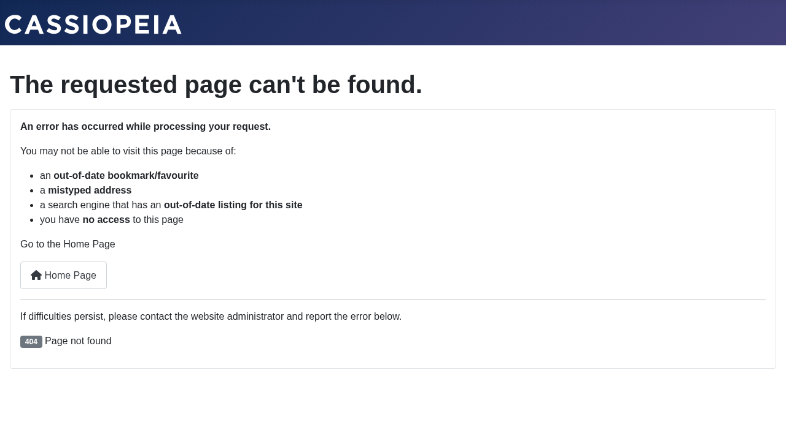

Publishing Content to the Fediverse
| 🏠 Tutorial Home | ← Creating Actors | Following and Followers → |
Once you have a local actor set up and at least one remote follower,
every article you publish by that actor is automatically wrapped in an
ActivityPub Create(Note) activity and delivered to every
follower’s inbox. This tutorial walks through the full cycle: write an
article, verify it appears in grace’s outbox, and confirm that delivery
was queued for remote recipients. |
Prerequisites
- Joomla Fediverse installed and both plugins enabled
- A local actor for the article’s author (see Tutorial 03 — Creating Actors)
- At least one remote follower for that actor (optional for outbox verification; required for delivery testing — see Tutorial 05 — Following & Followers)
Important: The Content - Fediverse plugin must be enabled. It is the hook that fires when a Joomla article is saved or published. Without it, nothing is queued for delivery.
Step 1: Write and Publish the Article
In the Publishing tab (or the Author field in the right-hand sidebar), set the author to the Joomla user associated with your actor — in this tutorial that is Grace.
 Set the article author to the Joomla
user linked to your Fediverse actor (grace). The Content plugin watches
this field.
Set the article author to the Joomla
user linked to your Fediverse actor (grace). The Content plugin watches
this field.
Give the article a title and body, then set Status to Published and click Save & Close.
As soon as the article is saved in Published state, the Content -
Fediverse plugin intercepts the save event, builds a
Create(Note) activity, and inserts it into the delivery
queue.
Step 2: Check the Delivery Queue
 Each row in the
Deliveries view represents a pending HTTP POST to a remote inbox. The
status column shows whether delivery has been attempted.
Each row in the
Deliveries view represents a pending HTTP POST to a remote inbox. The
status column shows whether delivery has been attempted.
Step 3: Verify the Outbox
The outbox is a public, paginated ActivityPub collection of everything grace has published. Remote servers read it to catch up on missed activities. You can inspect it directly:
GET https://yoursite.example/activitypub/actors/grace/outbox
Accept: application/activity+jsonThe collection index response:
{
"@context": "https://www.w3.org/ns/activitystreams",
"id": "https://yoursite.example/activitypub/actors/grace/outbox",
"type": "OrderedCollection",
"totalItems": 1,
"first": "https://yoursite.example/activitypub/actors/grace/outbox?page=1"
}Follow the first link to fetch the page of items:
{
"type": "OrderedCollectionPage",
"orderedItems": [
{
"type": "Create",
"object": {
"type": "Note",
"content": "<p>Hello, Fediverse!</p>"
}
}
]
}
The outbox endpoint confirms that the article was wrapped in a Create activity and stored.Editing and Deleting Articles
- Editing an article body creates an
Update(Note)activity and queues it for delivery to all followers. - Deleting (or unpublishing) an article creates a
Delete(Tombstone)activity. Remote servers that cached the original post will remove it from their timelines when they process the Delete.
Both operations are automatic — the Content - Fediverse plugin handles them with no additional steps on your part.
Common Issues
| Symptom | Likely cause | Solution |
|---|---|---|
| No delivery queue rows after publishing | Content - Fediverse plugin disabled | Enable plg_content_fediverse in System →
Plugins |
| Delivery rows stuck in pending forever | Scheduler task not running | Configure a server cron or use Run Now as described above |
Outbox returns an empty orderedItems |
Article author is not a Fediverse actor | Create an actor for the author (Tutorial 03) |
| Remote timeline shows HTML instead of plain text | Note content is being double-encoded | Check for a third-party content plugin that transforms article output |